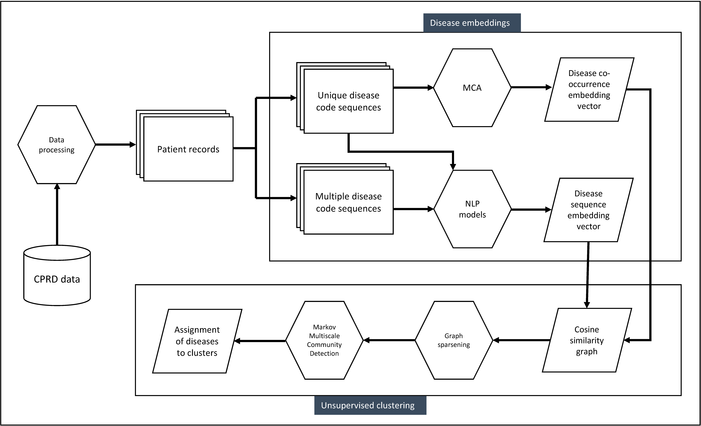
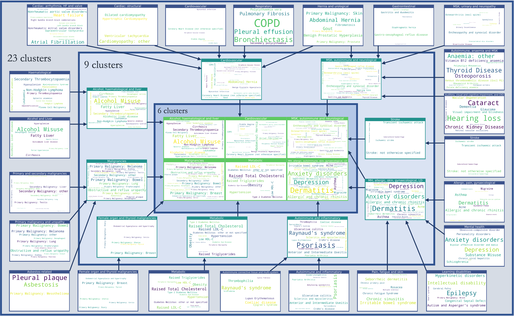
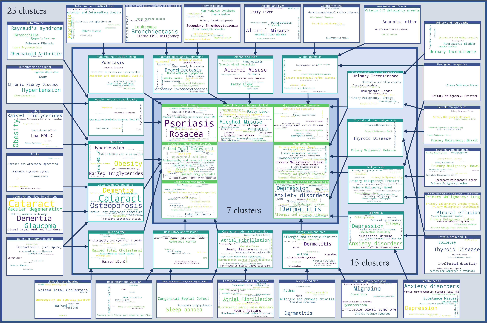

Disease clusters were created using a two-step process:
Here, we aim to generate what we call "multi-resolution" clusters, that is, a set of clusters from more granular (with many clusters) to coarse (with few clusters). This allows us to visualise how clusters aggregate or split across the resolutions. Further details on our approach to generating disease clusters can be found in our paper in Communications Medicine.
 Used with permission from Beaney et al (2024)
As a co-occurrence-based method, we selected Multiple Correspondence Analysis (MCA), as this requires few distributional assumptions about the data. We used this to create a vector representation of each disease, trialling retention of different numbers of dimensions from two to 30.
View the interactive plot of the first two dimensions from MCA.
In the figure, more similar diseases appear closer together on each dimension. Also overlaid on the plot are patient age category and the number of long-term conditions (LTCs). As can be seen, age and number of LTCs are strongly represented on the first dimension. Conditions common in younger people tend to separate from those more common in older people along dimension 1. Chronic liver conditions separate strongly on dimension 2.
Of co-occurrence methods, we found MCA retaining 30 dimensions to perform best according to our evaluation criteria explained below.
For sequence-based methods, we compared three popular word embedding algorithms (GloVe, and the two word2vec algorithms of skipgram and continuous-bag-of-words). Here, we also tested different inputs of disease codes, using a code either once (at diagnosis, and not repeated) or allowing multiple codes to appear in the sequence. We found skip-gram using multiple codes (SGM) to perform best. Further information on the evaluation criteria is given below. CSV files of the MCA and SGM embeddings are available to download here:
Download: MCA embeddings
Download: SGM embeddings
We adopted a graph-based clustering algorithm, Markov Multiscale Community Detection (MMCD), with a Python implementation available on GitHub. This method allows the identification of optimal clusters simultaneously at different resolutions, and we compare the resulting clusters at a fine, medium and coarse resolution. Our analysis pipeline is available in a Jupyter notebook below, which runs in Python version 3.8.10 and uses the MCA or SG-M embeddings.
Download jupyter notebook: MMCD pipeline
Finally, we created word cloud representations of the disease assignments to clusters, separately for the best co-occurrence method (MCA) and best sequence-based method (SGM). Here, the size of the text reflects the relative prevalence of the disease within the cluster.
 Used with permission from Beaney et al (2024)
 Used with permission from Beaney et al (2024)
CSV files of the assignment of diseases to each cluster can be downloaded below:
Download: MCA clusters
Download: SGM clusters
To evaluate the interpretability of disease clusters, we developed a set of 253 established disease association pairs, relevant to our 212 LTCs. The aim here is to provide a list of pairs of disease for which there is strong clinical evidence of an association, but is not an attempt to provide a comprehensive list of all possible associations. To create this list, we considered all 212 diseases, and used sources including the BMJ Best Practice guidelines, to create a set of known disease associations for each disease, incorporating both known risk factors and known complications for a given disease. The set of disease pairs were reviewed by three clinicians and any disagreements were discussed. A total of 144 conditions were included with at least one association to another disease (68% of the total).
Link to download the disease pairs: DISEASE_ASSOCIATION_PAIRS.csv
Note that each pair appears twice, and you may wish to de-duplicate each pair of associations depending on the purpose of your research.